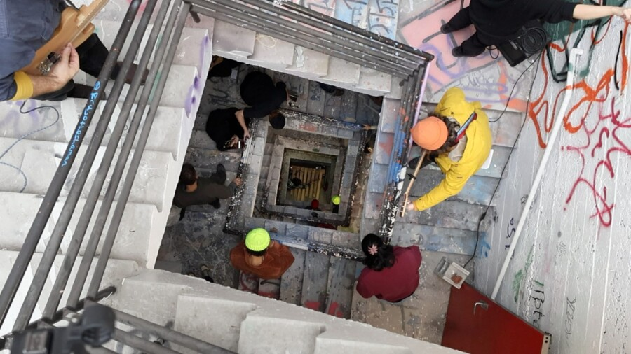

Short Story Long: 2026 MFA Thesis Show
We are pleased to present an exhibition by an international cohort of eight artists working with holes, movement, mourning, time, excavation, play and the possibility of communication. In this fragmented world, we found one another in a community brought together by chance. We share Short Story Long. Our works explore what it feels like to live in a time and place that doesn’t make sense. Patient processes, communal experiments, camp, and residue accumulate into new ways of wandering the ruins, wishing upon worrisome stars to tell us what it all means.
ABOUT
Michael Cunningham (b. 1982, Long Beach, CA) is a Chicago-based interdisciplinary artist, writer, traveler, chef, musician and educator. His works are meditations on the concept of home, both as a place of dwelling and a site of loss and longing. His sound-based sculptures and performances reveal the potential and aesthetic value of play through collaborative practices.
Claire Burke Dain (b. 1995, Chicago, IL) is a Chicago-based painter born and raised in Chicago. In the past couple of years she has had solo and two person exhibitions, including “Drifting Back to Dreamland” at Compound Yellow, “Fondage” at Purple Window and “Do You Love Me Now” at Rubberneck Gallery. She makes paintings that include planes, trains and automobiles.
Erin E. Lynch (b. 1996, Chicago, IL) is an artist and filmmaker working with 16mm film, video, sound, installation, and text. Drawing on film theory, psychoanalysis, and camp, her work explores spectatorship, humor, and multispecies life through genre cinema’s formal slippages. She was named a 2025 Artist To Watch by Comfort Station. @erinelizlynch
Catherine Lyu is a Chinese artist currently based in Chicago. She is a multidisciplinary artist, and her practice explores languages as words, images, and objects. She uses bodily knowledge like memory, sensory, emotion, and thought process to guide her decisions in art making. Her works are attempts to treat language spatially, physically, and bodily.
Elias Mendel (b. 1998, London, UK) is an interdisciplinary artist, archivist and educator who makes videos, sculptures, drawings, writings and performances. He is interested in the intersection between memory, roots, and the abyss and examining legibility, language, and diaspora. Mendel draws from a vast family history and archive.
Naeemeh Naeemaei (b. 1984, Tehran) is a multidisciplinary artist whose practice explores ecological grief, folklore, and reconstructed memory. She has exhibited in museums and galleries internationally, and her work has featured in essays and on the covers of Leonardo, Sonic Acts, Dark Matter, Animal Studies Journal, Banyan Review, Walker Reader, and Orion.